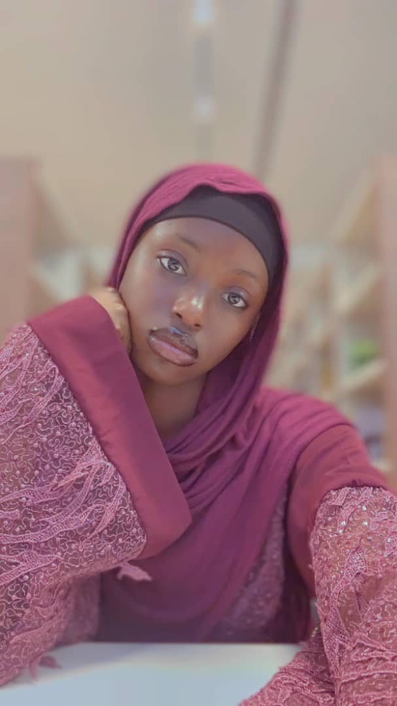

Amina Aramide Sadiku
Amina is a graceful and intelligent member of the Sadiku family. Her kindness and creativity shine through in everything she does, and she continues to carry the Akintunde legacy with elegance and pride. Amina is more of a multifaceted person (she has different personalities and behaviors) and a cool vibe 😌🤝.